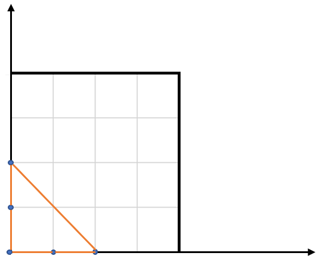

812. 最大三角形面积
n ≤ 50 直接三重循环枚举三元组，叉积绝对值的一半就是三角形面积，取最大。
思路
- 数据规模极小（n ≤ 50），直接枚举所有三元组
(i, j, k)，共约 2 万组。 - 面积 =
|(b−a) × (c−a)| / 2：叉积(bx−ax)(cy−ay) − (by−ay)(cx−ax)，绝对值除以 2。 - 整数坐标的叉积是精确值，不会出现浮点误差问题。
图解
最优解
1class Solution {2 public double largestTriangleArea(int[][] points) {3 double ans = 0;4 int n = points.length;5 // n <= 50，三重循环枚举所有三元组；叉积的绝对值一半就是三角形面积6 for (int i = 0; i < n; i++)7 for (int j = i + 1; j < n; j++)8 for (int k = j + 1; k < n; k++) {9 int[] a = points[i], b = points[j], c = points[k];10 double area = Math.abs((b[0] - a[0]) * (c[1] - a[1]) - (b[1] - a[1]) * (c[0] - a[0])) / 2.0;11 ans = Math.max(ans, area);12 }13 return ans;14 }15}题目
给你一个由 X-Y 平面上的点组成的数组 points ，其中 points[i] = [xi, yi] 。从其中取任意三个不同的点组成三角形，返回能组成的最大三角形的面积。与真实值误差在 10-5 内的答案将会视为正确答案。
示例 1：

输入：points = [[0,0],[0,1],[1,0],[0,2],[2,0]] 输出：2.00000 解释：输入中的 5 个点如上图所示，红色的三角形面积最大。
示例 2：
输入：points = [[1,0],[0,0],[0,1]] 输出：0.50000
提示：
3 <= points.length <= 50-50 <= xi, yi <= 50- 给出的所有点 互不相同
题面取自力扣当前版本。
数据快照 2026-11-04。题面版权归力扣所有，本站点仅供本人学习使用，请勿对外发布。